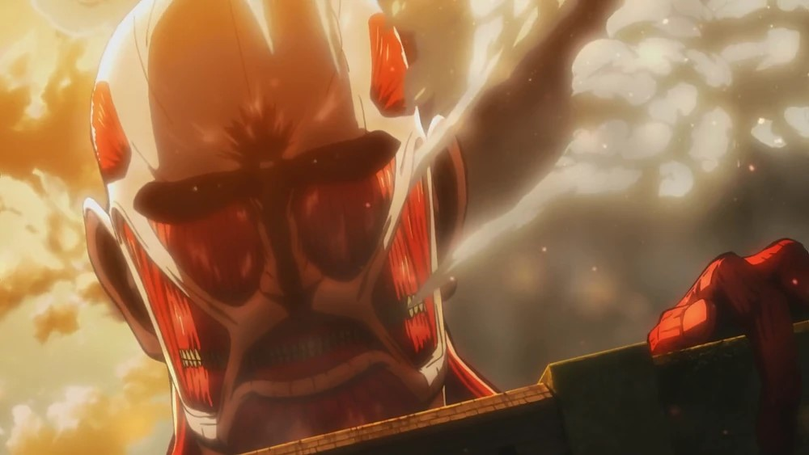
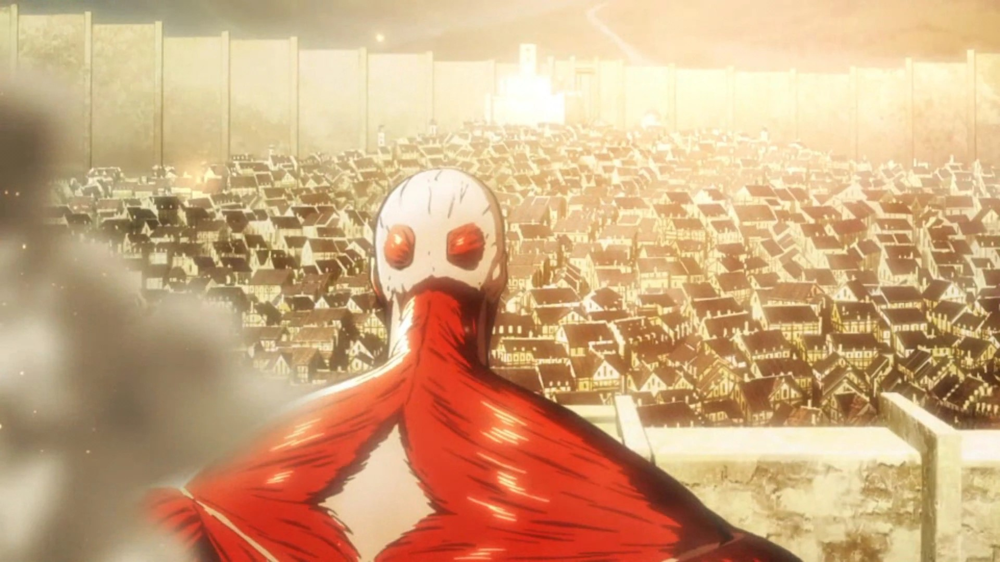
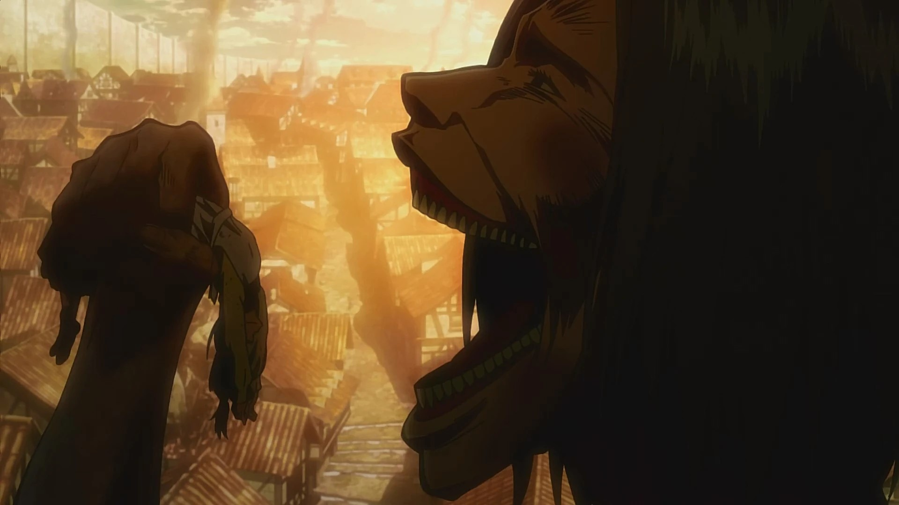

The Story
What is the Attack on Titan anime about?
The anime is about humanity trying its best to survive against flesh-eating Titans that are about 15 metres tall!
To protect themselves from these Titans. Humanity built 50 metres tall walls to protect itself from these giant titans.
But as the show progresses, we find out more about the walls and the Titans.
For simplicity I will only explain the events of Season 1 Episode 1 since the show is quite long and gets pretty complex.
There will of course be spoilers.
The Fall of Wall Maria

In the first episode of Attack on Titan, viewers are thrust into a harrowing and dystopian world where humanity teeters on the edge of extinction. The story unfolds within the confines of a massive walled city, where the last remnants of civilization reside in fear and isolation. These colossal walls have been humanity's only defense against the relentless onslaught of monstrous giants known as Titans, which devour humans with savage abandon
 We follow the stories of three main characters. Eren Yeager, his adopted sister Mikasa Ackerman, and his best friend Armin Arlert. Their peaceful lives within the walls are shattered when, seemingly out of nowhere, a Collosal Titan appears out of thin air, towering over the walls. The Collosal Titan continues to breach the outermost wall known as Wall Maria. With the walls open, the smaller but still huge Titans started to enter through the breach and attempt to eat every human in sight. Many lives are lost in the process.
 Eren, Mikasa, and Armin witness firsthand the destruction of their once beloved town. And in the process, Eren's mom gets eaten by a Titan right in front of his eyes. The traumatic events that occurred on this day made Eren vow to annihilate every single Titan. This determination drives him to join the military, whose sole purpose is to protect humanity against the Titans.
Eren then continues to join the scout regiment, where he will be able to embark on journeys outside of the walls.
This is where Eren's journey truly begins.
Conclusion of Episode 1
The first episode of Attack on Titan effectively establishes the tone of the series. It already tells us and shows us what is at stake in the world of the Titans. We will later find out more about the Titans. as Eren, Mikasa, and Armin embark on the dangerous journey. To find out what happens next. You can find links on the homepage to where you can watch Attack on Titan.